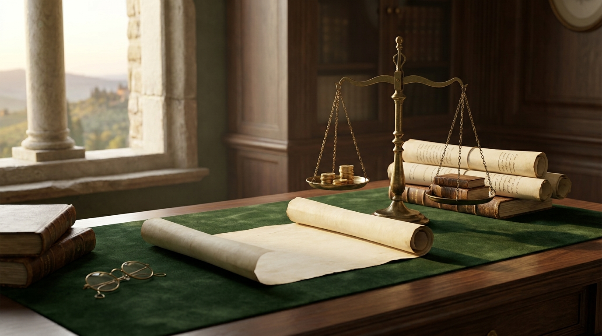

Salario giusto e bonus assunzioni: cosa cambierebbe con il Dl 62/2026
Il Decreto legge 62/2026 interviene su due fronti collegati: la definizione di salario adeguato e l'accesso agli incentivi contributivi per le assunzioni. Il testo, ancora in attesa di conversione, lega entrambi al rispetto dei contratti collettivi comparativamente più rappresentativi. Le disposizioni potrebbero mutare in sede parlamentare: ne illustriamo l'impianto e le possibili ricadute operative.

Premessa: una norma ancora in fieri
Il Dl 62/2026 è un decreto legge non ancora convertito. Ciò significa che il testo deve passare il vaglio del Parlamento entro sessanta giorni dalla pubblicazione e che le sue disposizioni possono essere modificate, integrate o, in parte, non confermate. Per questo motivo trattiamo gli effetti al condizionale: quanto segue descrive l'impianto attuale, non un assetto definitivo.
Fatta questa premessa, l'art. 7 del decreto introduce un nesso esplicito tra retribuzione conforme ai contratti collettivi e diritto a beneficiare degli sgravi contributivi sulle nuove assunzioni.
Inquadramento normativo
Il tema del "salario giusto" non nasce con questo decreto. La giurisprudenza ha da tempo elaborato un orientamento consolidato secondo cui la retribuzione, per essere conforme all'art. 36 della Costituzione (sufficiente e proporzionata), deve essere parametrata ai minimi tabellari fissati dai contratti collettivi nazionali di categoria. È un criterio interpretativo che il giudice applica per valutare, caso per caso, l'adeguatezza del trattamento economico.
Sul piano europeo, il riferimento è alla Direttiva (UE) 2022/2041 del Parlamento europeo e del Consiglio, relativa a salari minimi adeguati nell'Unione europea, il cui termine di recepimento per gli Stati membri era fissato al 15 novembre 2024. L'Italia, priva di un salario minimo legale, persegue l'obiettivo dell'adeguatezza attraverso la contrattazione collettiva: è in questa cornice che si colloca il decreto.
La novità sta nel passaggio di funzione. Il rispetto dei minimi contrattuali, finora rilevante soprattutto come criterio interpretativo ex post davanti al giudice, diventerebbe con il Dl 62/2026 una condizione di accesso agli incentivi: senza retribuzione conforme al CCNL comparativamente più rappresentativo, niente sgravi.
Implicazioni pratiche
Il cuore del problema è l'individuazione del contratto collettivo applicabile. Il decreto richiama il CCNL stipulato dalle organizzazioni sindacali e datoriali comparativamente più rappresentative sul piano nazionale. È una scelta che mira a contrastare i cosiddetti "contratti pirata": accordi sottoscritti da sigle scarsamente rappresentative, spesso con minimi retributivi più bassi, utilizzati per ridurre il costo del lavoro.
Per il datore di lavoro questo comporta due conseguenze. La prima: applicare un contratto economicamente vantaggioso ma stipulato da soggetti poco rappresentativi potrebbe precludere l'accesso ai bonus. La seconda: il rispetto formale di un CCNL non basta se il contratto scelto non supera il test di rappresentatività comparativa.
È ragionevole attendersi un'attenzione maggiore sulla verifica del trattamento economico applicato, anche se l'intensità effettiva dei controlli dipenderà dai decreti attuativi e dalla prassi che si consoliderà. Le modalità operative di accertamento sono attese dal Ministero del Lavoro, ma allo stato non risultano ancora emanate.
Cosa fare in concreto
- Verificate quale CCNL applicate e accertatevi che sia stipulato dalle organizzazioni comparativamente più rappresentative del vostro settore: è il presupposto che, secondo il decreto, condizionerebbe l'accesso agli incentivi.
- Confrontate le retribuzioni effettive con i minimi tabellari del contratto di riferimento, voce per voce, prima di programmare nuove assunzioni agevolate.
- Mappate le assunzioni previste nei prossimi mesi e simulate l'impatto economico nei due scenari: con e senza accesso ai bonus contributivi.
- Conservate la documentazione che attesta il contratto applicato e i trattamenti erogati: in caso di controllo, la tracciabilità è decisiva.
- Monitorate l'iter di conversione del decreto e i futuri provvedimenti attuativi del Ministero del Lavoro: le condizioni di accesso potrebbero essere precisate o modificate.
Consigliamo, in presenza di applicazione di CCNL minori o di dubbi sulla rappresentatività della sigla firmataria, una verifica preventiva prima di assumere impegni economici basati sull'attesa degli incentivi.
---
Contributo informativo a cura di Tamburro & Partners - Avv. Giuseppe Tamburro. Non costituisce parere legale.
Ogni storia di lavoro ha i suoi tempi.
Se gestisci HR e vuoi un confronto su contenzioso, ispezioni o licenziamenti, scrivi allo studio. Ti rispondiamo entro un giorno lavorativo.